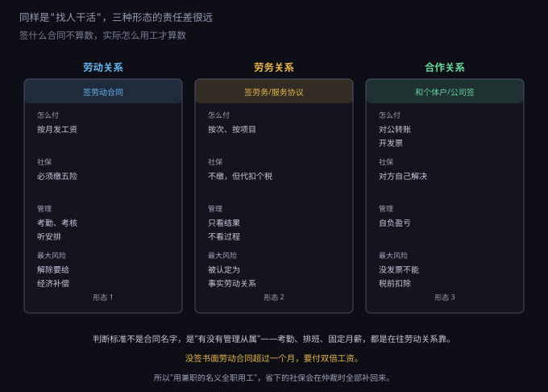
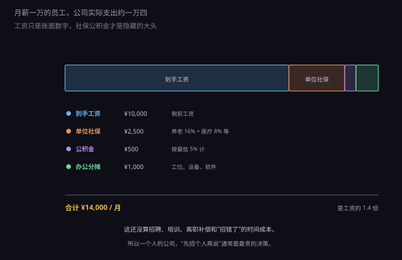
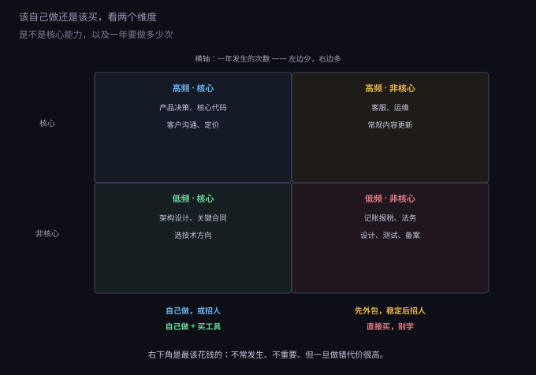

约 0.31 万字 · 3 张图 · 一个人的公司，最贵的决策是"谁来干"
"找人干活"在法律上不是一个动作，是三个。选错形态，省下的钱会在别处加倍还回来。

劳动关系：签劳动合同，按月发工资，缴五险一金， 员工接受考勤、考核、排班。这是责任最重的一种， 但也是唯一能长期稳定用人、能要求保密和竞业的一种。
劳务关系：签劳务协议或服务协议，按次、按项目付费， 不缴社保，只看结果不看过程。适合设计、翻译、一次性开发这类边界清晰的工作。 付钱时要代扣个人所得税（劳务报酬所得）。
合作关系：对方是个体工商户或公司，你和他对公转账、他给你开发票。 他不归你管，自负盈亏，社保自己解决。 这是三种里最"干净"的一种——前提是对方真能开票。
很多人以为"签了劳务协议就是劳务关系"。不是。 仲裁和法院看的是实际怎么用工，合同名字只是参考。
判断的核心是一个词：从属性。具体看三条：
三条里中了两条以上，"劳务协议"这个抬头基本挡不住认定。 一旦被认定为事实劳动关系，你要补的是：未签书面劳动合同的双倍工资 （从用工满一个月的次日起算，最多十一个月）、社保、以及解除时的经济补偿。
顺带说清一个相关的坑：试用期。 它不是想定多久就定多久——合同期限三个月以上不满一年的， 试用期不超过一个月；一年以上不满三年的，不超过两个月； 三年以上和无固定期限的，不超过六个月。 同一家单位对同一个人只能约定一次试用期， 而且试用期工资不得低于转正工资的 80%。
所以"用兼职的名义全职用工"这件事，本质是把风险往后推， 而不是消掉。它只在一种情况下成立：对方真的是兼职—— 有自己的主业、按成果交付、不受你考勤。
只要构成劳动关系，缴社保就是法定义务， 不能通过约定排除。这一点必须先说清楚，因为市面上流传两种错误做法。
第一种：让员工签"自愿放弃社保"承诺书。 无效。社保是法定义务，不是双方可以协商放弃的民事权利。 员工签了，将来照样可以要求补缴，还可以据此主张解除合同并要求经济补偿。
第二种：按最低基数缴。 这个做法很普遍，但它是"低风险"而不是"无风险"—— 员工一旦投诉，要按实际工资补差，还要加收滞纳金。 而且员工退休时养老金偏低，追溯的动机是存在的。
五险的构成和大致比例（各地不同，以当地社保局公示为准）：
缴费基数有上下限：下限是当地社平工资的 60%，上限是 300%。 工资低于下限的按下限缴，高于上限的按上限缴。
不缴的后果写在《社会保险法》第八十六条：责令限期补足， 自欠缴之日起按日加收万分之五的滞纳金； 逾期仍不缴的，处欠缴数额一倍以上三倍以下罚款。 万分之五按年算接近 18%，比大多数经营贷都贵。
招人之前，先把账算成"公司实际支出"，而不是"他到手多少"。

月薪一万，单位社保按常见比例大概两千五，公积金按最低 5% 是五百， 再加上工位、设备、软件账号分摊一千，合计一万四。 也就是说，工资的 1.4 倍才是账面成本。
还没算进去的有四笔：
如果真走到解除那一步，成本也要先知道。经济补偿按工作年限算： 每满一年支付一个月工资；六个月以上不满一年按一年算； 不满六个月支付半个月。这就是常说的 "N"。 如果他没提前三十天通知就解除，还要多一个月，也就是 "N+1"。 月工资高于当地社平工资三倍的，按三倍封顶，年限最多算十二年。 "N" 的基数是他离职前十二个月的平均工资，不是基本工资。
所以"先招个人再说"通常是最贵的决策。它把一笔可变的、按需付费的成本 变成了固定的、每月都要付的成本——而固定成本正是 8.4.3 讲过的、 把公司拖死的那类东西。
如果决定外包，价格怎么算是第二道选择题。
按项目。总价固定，交付物明确。适合边界清楚的工作 （一个落地页、一次 logo 设计）。风险在"边界不清"—— 需求改三轮，价格就该重谈，所以合同里要写清修改次数。
按时间。按小时或按天计费，适合探索性工作 （性能优化、疑难排查）。风险在"磨洋工"，所以要约定上限和阶段产出。
按月。相当于半个员工，适合长期但不满全职的工作 （每周来两天做运维）。这一种最接近劳动关系，要注意别做成"事实劳动关系"—— 别考勤、别排班、允许他接别的活。
付钱给个人的时候别忘了个税。劳务报酬所得要由你代扣代缴， 预扣规则是：每次收入不超过四千元的，减除八百元后按 20% 预扣； 四千元以上的，减除 20% 费用后按 20%～40% 的税率预扣。 这笔钱是从对方报酬里扣的，不是额外由你承担—— 谈价格时说清"税前还是税后"，能省掉很多来回。
还有一个维度是对方是个人还是公司。 个人便宜、灵活，但没有发票（要去代开），出问题时责任能力有限； 公司贵一些，但能开专票抵扣、有合同主体、走了还有人接手。 涉及核心系统、长期维护的活，选公司；一次性的、边界清晰的活，选个人。
这一小节是这一节的核心。判断标准只有两个维度： 是不是核心能力，以及一年要做多少次。

高频 + 核心：自己做，或招人。 产品决策、核心代码、客户沟通、定价。这些是公司的差别所在， 外包出去等于把命门交出去。
高频 + 非核心：先外包，稳定后招人。 客服、日常运维、内容更新。这类活的特点是"必须有，但不产生差别"。 量小的时候外包，量大到能养活一个专职岗位时再招。
低频 + 核心：自己做，但工具要买。 架构设计、关键合同、技术选型。这类事一年做几次， 但每次决策影响很久，所以要自己做；不过可以买工具、买咨询来辅助判断。
低频 + 非核心：直接买，别学。 记账报税、法务文书、logo 设计、渗透测试、ICP 备案代办。 这一类最容易被"我自己学一下"浪费掉——学习成本远高于采购成本， 而且做错了代价很高（比如隐私政策抄错、报税漏项）。
举几个具体价格感受一下：代账每月两百到五百； 一份合同审查几百到一千；logo 设计几百到几千； 一次渗透测试几千；ICP 备案代办几百。 这些钱加起来一年不到两万，换来的是你不用在这些事上犯错。
把上面的东西拼起来，一个人的公司最合理的配置大概是这样。
自己：产品、核心代码、客户沟通、定价。这四件事不外放。
固定外包：代账（每月两三百）。这是唯一建议"长期固定"的外包， 因为它按周期发生、规则明确、错了代价高。
按次采购：合同审查、设计、渗透测试、备案代办。 一年几次，每次几百到几千。
按需兼职：忙不过来时找一个能按项目交付的人， 边界写清楚、按成果结算、不考勤。
暂时不招：直到"外包的钱已经接近一个全职的成本"， 并且"这个岗位的活是连续的、需要内部知识的"，再考虑招人。 这两个条件同时满足，招人才是合算的。
一、用兼职名义全职用工。 前面说过，认定看从属性。真被认定，补的是双倍工资、社保、补偿， 加起来往往是当初省下的好几倍。
二、让员工签"自愿放弃社保"。 无效。而且这张纸在仲裁时反而成了"你知道该缴却没缴"的证据。
三、用个人账户发工资。 公司账上没有这笔支出，就不能税前扣除；员工那边也可能被认定为未足额参保。 更重要的是，公私混同会削弱有限责任的保护（上一节讲过）。
四、外包不约定知识产权归属。 8.6.1 讲过：《著作权法》第十九条，委托作品没约定归属的， 著作权属于受托人。你花钱请人写的代码，可能不是你的。
五、把外包当员工管。 要求打卡、参加每日站会、不许接别的活——这三条加起来， 基本就把"合作"做成了"劳动"。
六、为了省钱自己学报税。 报税不是知识难，是容错率低。漏一项、填错一栏， 后面要花几倍时间更正。这类事的正确态度是：花钱买别人踩过的坑。